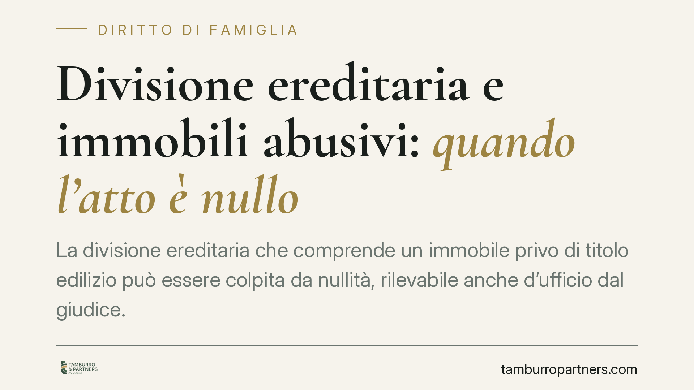

Divisione ereditaria e immobili abusivi: quando l'atto è nullo
La divisione ereditaria che comprende un immobile privo di titolo edilizio può essere colpita da nullità, rilevabile anche d'ufficio dal giudice. Il tema tocca da vicino i coeredi che vogliono sciogliere la comunione su beni non in regola sotto il profilo urbanistico. Senza una preventiva verifica della conformità, l'intero progetto divisorio rischia di bloccarsi.

Il problema: dividere un'eredità che include un immobile abusivo
Quando più eredi vogliono sciogliere la comunione ereditaria, spesso il patrimonio comprende immobili. Se uno di questi è stato costruito senza permesso di costruire, o presenta difformità rilevanti rispetto al titolo, la divisione può incontrare un ostacolo tecnico-giuridico di peso: la nullità dell'atto per violazione della normativa urbanistica.
Il punto non è teorico. Il notaio chiamato a rogare l'atto di divisione, così come il giudice che pronuncia la divisione giudiziale, deve confrontarsi con la regolarità edilizia del bene. In assenza, l'operazione rischia di essere improduttiva di effetti.
Inquadramento normativo
La norma di riferimento è l'art. 46, comma 1, del D.P.R. 380/2001 (Testo Unico dell'Edilizia). La disposizione commina la nullità degli atti tra vivi, aventi per oggetto il trasferimento o la costituzione di diritti reali su immobili, quando da essi non risultino gli estremi del titolo edilizio (permesso di costruire, SCIA, o il titolo in sanatoria).
Si tratta di una nullità testuale e assoluta: può essere fatta valere da chiunque vi abbia interesse ed è rilevabile d'ufficio dal giudice in ogni stato e grado del processo. Non è sanabile con la semplice volontà delle parti; occorre intervenire sul bene.
Va però segnalato un profilo tuttora dibattuto. L'art. 46 parla di atti di "trasferimento" e "costituzione" di diritti reali. La divisione ereditaria, secondo l'impostazione tradizionale, ha natura dichiarativa e non traslativa: non trasferisce, ma accerta e distribuisce diritti già esistenti. Da qui la discussione sulla sua assoggettabilità alla nullità urbanistica. Le Sezioni Unite (Cass. SU n. 25021/2019) si sono pronunciate sulla nullità degli atti traslativi affetti da irregolarità urbanistica, qualificandola come nullità "testuale". L'estensione automatica di tale principio alla divisione non è pacifica e registra orientamenti differenziati nella giurisprudenza di merito e di legittimità. In concreto, prudenza impone di trattare la divisione come soggetta ai medesimi vincoli di conformità.
Non tutti gli abusi sono uguali
Il grado di irregolarità incide sulle conseguenze:
- Abuso totale: immobile costruito senza alcun titolo. È l'ipotesi più grave e quella che più chiaramente attrae la nullità.
- Abuso parziale o variazione essenziale: difformità significative rispetto al progetto assentito.
- Difformità minori o tolleranze costruttive: scostamenti contenuti che, entro le soglie di legge, non incidono sulla validità dell'atto.
La distinzione è decisiva, perché determina se e come il bene può essere regolarizzato.
Come si regolarizza: due strade diverse
È errato trattare come sinonimi istituti distinti.
L'accertamento di conformità (art. 36 D.P.R. 380/2001) è lo strumento ordinario: presuppone la cosiddetta doppia conformità, cioè la conformità dell'opera alla disciplina urbanistica sia al momento della realizzazione sia al momento della domanda. Se manca anche solo una delle due, la strada è preclusa.
Il condono edilizio, invece, è un istituto straordinario ed eccezionale, previsto da leggi speciali con finestre temporali chiuse (si pensi alle leggi del 1985, 1994 e 2003). Consente di sanare abusi che non avrebbero i requisiti per l'accertamento di conformità, ma solo nei limiti e nei termini tipizzati dal legislatore. Oggi non è una via generalmente praticabile.
Implicazioni pratiche per i coeredi
Finché l'immobile resta irregolare, la divisione che lo include può non andare a buon fine: il notaio si rifiuterà di rogare e, in sede giudiziale, la nullità può essere rilevata anche senza istanza di parte. La comunione ereditaria resta così in stallo, con tutti i costi e i rischi di una contitolarità forzata.
Questo può paralizzare la vendita del bene, bloccare la liquidazione delle quote e alimentare il contenzioso tra i coeredi.
Cosa fare in concreto
- Verificare, prima di avviare qualsiasi progetto divisorio, la regolarità urbanistica e catastale di ogni immobile dell'asse ereditario.
- Affidare a un tecnico abilitato una relazione sullo stato di conformità, confrontando titoli edilizi, planimetrie catastali e stato di fatto.
- Valutare la percorribilità dell'accertamento di conformità ex art. 36, verificando l'esistenza della doppia conformità.
- Considerare, come alternativa, soluzioni che non impongano la divisione del bene irregolare (ad esempio l'attribuzione per intero a un coerede con conguaglio, ove ammissibile).
- Pianificare con anticipo la gestione dei beni in comunione quando la regolarizzazione non è possibile, così da evitare lo stallo.
Disclaimer
Contributo informativo a cura di Tamburro & Partners Avvocati - Avv. Giuseppe Tamburro. Non costituisce parere legale.
Ogni famiglia ha il suo equilibrio.
Separazione, divorzio, affidamento, assegno: se vuoi un confronto riservato su una specifica situazione, scrivi allo studio. Ti rispondiamo entro un giorno lavorativo.